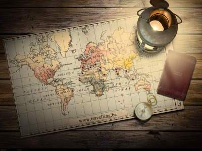

Jesse Hoare Evans
Intro
 Here is a little information that might help people get to know me. The goal of this website is to explain a brief background on myself as well as also informing you of some of my intersets and things I am currently doing. I am originally from Australia but have been living in the US for 11 years now. I became a citizen in July of 2014. As you can probably tell by this point I am a world citizen and love travelling. I also love eating good food, this ranges from good Thai, to pizza to a new personal favourite on wet and cold Seattle days, pho! I hope that this page explains and shows a little bit about me!
Here is a little information that might help people get to know me. The goal of this website is to explain a brief background on myself as well as also informing you of some of my intersets and things I am currently doing. I am originally from Australia but have been living in the US for 11 years now. I became a citizen in July of 2014. As you can probably tell by this point I am a world citizen and love travelling. I also love eating good food, this ranges from good Thai, to pizza to a new personal favourite on wet and cold Seattle days, pho! I hope that this page explains and shows a little bit about me!
About Me

I am not to sure what to write here so I will just list off a few things that are interesting about me that I have not covered elsewhere
- I recently got engaged to my longtime girlfriend (that is her in the photos)
- I love to travel, the picture at the bottom is from a recent trip my fiance took, in Dublin from the guinness storehouse
- I went to school and studied Criminal Justiceat WSU, Go Cougs!
- Up until about 2 years ago I used to play rugby
- I used to brew beer, but I still enjoy drinking it!
Background

I was born in Sydney, Australia in 1992 and moved to Melbourne when I was around 2. I lived there until I was 10 when my family moved to the UK. I lived there for 2 more years before moving back to Melbourne for another year. After that I came stateside and apart from a brief 6 month period where I resided in Belgium I have lived here ever since.

Epicodus Projects
Below is a list of different projects that I have done during my first week in order of completion (oldest to most recent project).
- Hello World
- Cookie Recipe
- Travel
- Cupcakes
- Boring Lecture
- Great Barrier Reef
- Wikipedia
- This was the first project that I worked on. It was a simple website using html where we said "hello world" in 5 different languages. After that we added "goodbye world" in Japanese and Pig latin.
Interests/Hobbies
I have a number of interests and hobbies, you can see some of them below.
- Watching sports
- Rugby
- Cricket
- Football
- Soccer
- Favorite Teams (in no particular order)
- Hiking
- Snowboarding (when I have the time!)
- Travelling! 